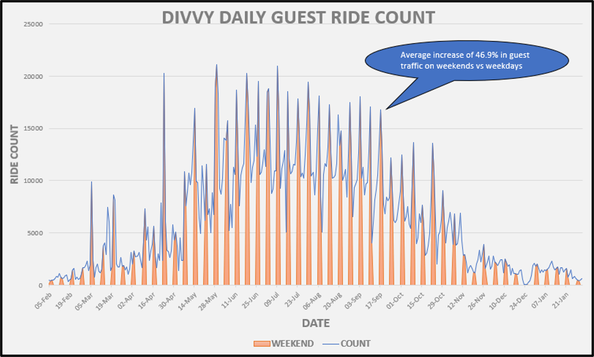
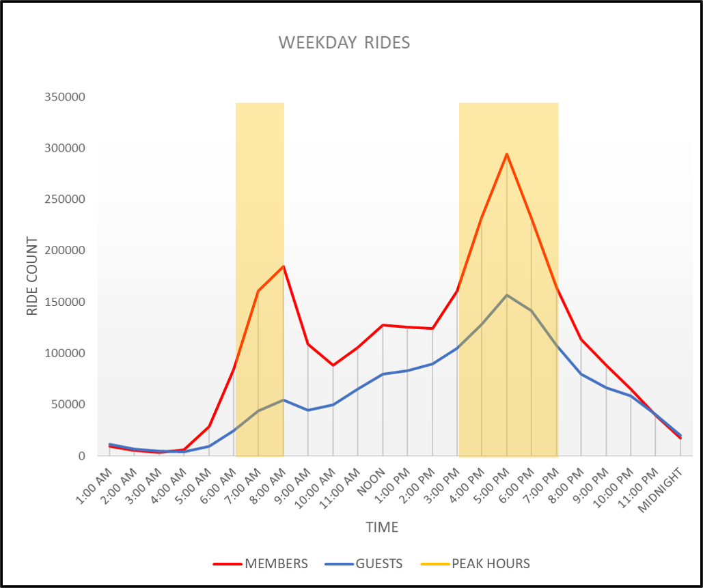

Meet Divvy, a ride-share company owned by the Chicago Department of Transit (CDOT) and operated in partnership with Lyft. Divvy serves the cities of Chicago and Evanstan with recent expansions in the Far South Side of Chicago in 2020 as well as both Northwest and Southwest Chicago in 2021. More recently, Divvy redesigned their ebike and through partnership with Skyhook Solar, in 2022, they launched solar powered ebike canopy docking stations. Their mission is to provide a convenient alternative for consumers to travel Chicago. To do this, they have both pedal (classical) and electrical bikes (ebikes) ready on demand for rent to consumers. Divvy’s subscription model is in the form of guest passes (single-use or per day) or through an annual membership.
data, methodology, and tools
This case study uses 12-months internal, first-party collected data between February 2022 - January 2023 provided by Divvy under this license. Each row of data is comprised of anonymized metadata under the domains of: time, location, and type. The data given is presented in the form of .csv spreadsheets broken up by month of occurance. The methodology guiding this case study follows the teachings of the Google Data Analytics Professional Certification, which is: Ask, Prepare, Process, Analyze, Share, and Act. For this study, I utilized the programming languages: Python, SQL, and VBA.
Ask
- Identify historical trends for casual bike riders
- Determine factors that influence casual riders into buying annual memberships
- Use insights from historical trends and factors associated with casual riders buying annual memberships to improve the casual rider to annual membership conversion rate via digital media.
Prepare
After collecting the twelve internal data spreadsheets from Divvy, I aggregated them into a SQL Server table using Python (Pyodbc and Pandas). The move from spreadsheets to SQL was chosen due to the size limitations of Microsoft Excel being 1,048,576 rows, whereas the aggregated dataset contained 5,754,248 rows. code available on GitHub here.
Process
Through inspecting the dataset more closely, I noticed that the location domain of the data had not been recorded on some records (reported as null). Also, the location coordinates on some instances were not as accurate as others. Thus to normalize and reinforce data integrity I limited the scope of this project to focus only on the domains of time and type rather than removing the observations all together. To accomplish this, I wrote a VBA macro that iterates through a folder, opens the .CSV files, removes the location data, and parses and typecasts the custom type variable to a more SQL-friendly integer and datetime data types. code available on GitHub here.
Analyze
- There is a 46.9% increase in guest rentals on weekends vs weekdays.
- Annual membership users' peak hours during weekdays coinside with expected commuter hours (7:00am - 8:59am / 3:00pm - 6:59 pm).
- Both casual and annual members follow similar trends during weekends with peaks rentals occuring during daylight hours (10:00am - 6:59pm).
- Centeral tendency information on trip duration (guest): Mean - 22.3 minutes, Median - 13 minutes, Mode - 7 minutes.
- Centeral tendency infromation on trip duration (members): Mean - 12.3 minutes, Median - 9 minutes, Mode - 5 minutes.
Share



Act
test